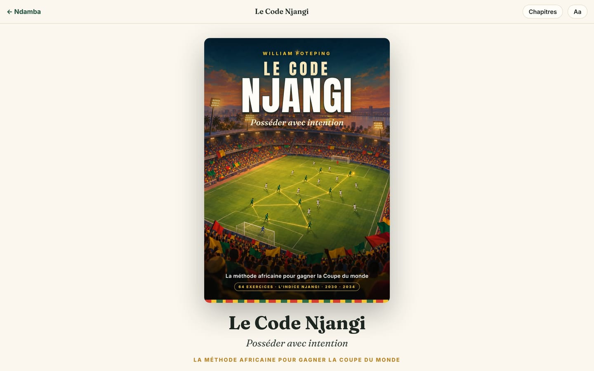
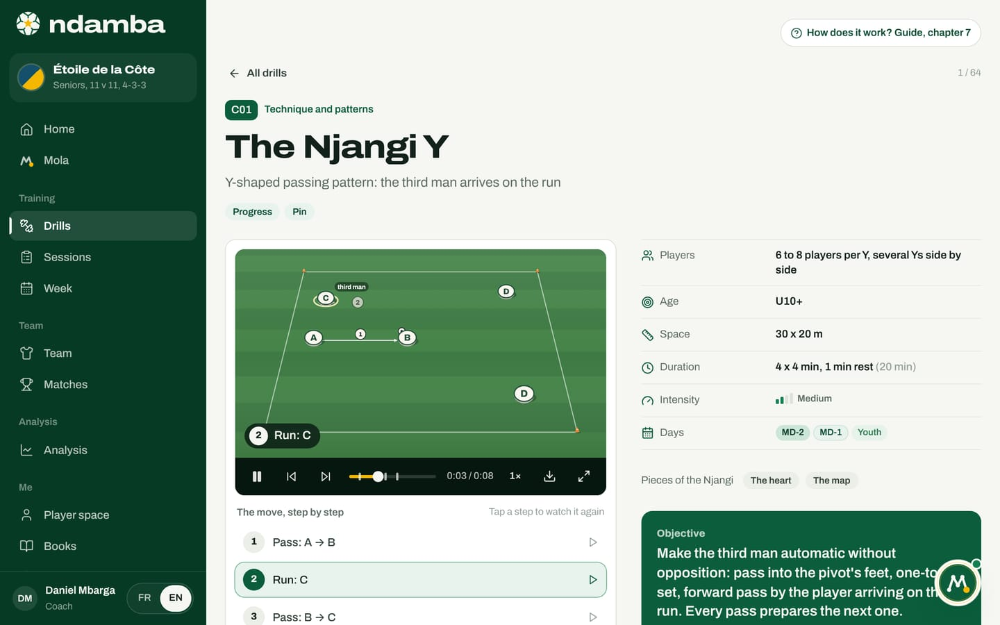
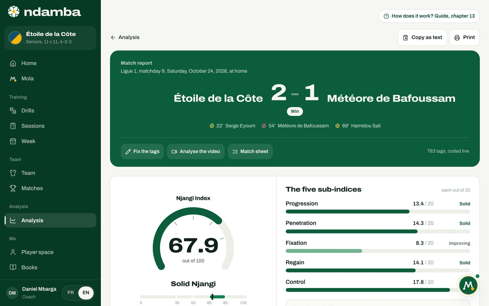

The Njangi Code, the method book
The book that writes down Ndamba’s game model: its nine parts and 38 chapters, its 64 drill cards, its callouts, what it gives the app, and how to read it online.
10 min read
A game idea that is written nowhere leaves with the coach who carries it. That is why a book sits at the centre of Ndamba: Le Code Njangi (The Njangi Code), subtitled "Possession with purpose: the African method to win the World Cup". Written by William Foteping, it sets down the Njangi game model in black and white, from a child’s first rondo to a national team’s game plan. The app helps you do every day what the book explains: its drills, its training week and its Njangi Index (the Indice Njangi of the French book) all come from these pages. The book is free to read online, chapter by chapter.
The book at a glance
Le Code Njangi is written in French, and the online reader is in French too, so its buttons keep their French names. The reader holds 38 chapters: a foreword, 36 chapters numbered 1 to 36 and grouped in nine parts, then the appendices, filed under number 37. That is why The books page shows "36 chapters" and "9 parts": it counts the chapters of the nine parts, without the foreword or the appendices. The 64 drill cards, each with its pitch diagram, form the heart of the seventh part.
The cover sums up the promise: 64 drills, the Njangi Index, and two dates, 2030 and 2034. The contents page ends with the motto the whole book explains: "Le ballon doit voyager. Mais il doit savoir où il va." (The ball must travel. But it must know where it is going.)


Who it is for
The foreword names its readers, and they match Ndamba’s profiles:
- the youth educator with a big group of children on a dirt pitch and little equipment, who finds simple principles, words children remember and drills to set up at the next session;
- the club or national team coach, who needs a complete game model: the moments of the game, the intentions, the roles, the week and periodization;
- the video and data analyst, who is looking for more than possession percentage;
- the technical director, who must get the U15, U17, U20, U23 and senior teams to play the same way;
- the federation president, who wants to know what to decide, in which order, and how to check the effect on the pitch;
- curious parents, who want to understand what their child is being taught.
The author suggests reading it in order the first time, then using it as a tool: the busy educator goes to the youth development chapters and the drill cards, the analyst opens part 8, the executive starts with the plan for a federation.
The nine parts and 38 chapters
In the reader, parts and chapters carry their French titles. Here each part keeps its French name with a gloss, and each chapter is given in English with its number, so you can find it in the reader.
- Avant-propos (Foreword): why the book exists, who it is for, how to read it, and how it links to the app and the novel.
- Part 1, Le manifeste (The manifesto): 1 Talent is not enough; 2 The Njangi, an African philosophy of the game; 3 The mantra, 2030 or 2034.
- Part 2, Le modèle de jeu Njangi (The Njangi game model): 4 The four moments and the golden rule; 5 The five intentions of possession; 6 The map: lanes, heights, triangles; 7 Transitions: win it back and look forward; 8 Defending to win the ball back; 9 The roles of the Njangi; 10 Set pieces with purpose.
- Part 3, La technique au service de l’intention (Technique serving the intention): 11 The pass that serves; 12 Receiving and turning; 13 Seeing before receiving; 14 Carrying, dribbling, shielding; 15 Finishing; 16 The goalkeeper who plays.
- Part 4, La tactique Njangi (Njangi tactics): 17 Systems with and without the ball; 18 Building out against every press; 19 Progressing: third man, overloads, switches; 20 The final third: attacking the box; 21 Pressing: triggers and traps; 22 The mid block, the low block and rest defence; 23 The game plan.
- Part 5, Des jeunes aux pros (From youth to pros): 24 The stages of Njangi development, from U6 to the senior team; 25 The ten skills of the Njangi player; 26 Developing players in Africa: our reality is our strength.
- Part 6, La semaine d’entraînement et la périodisation (The training week and periodization): 27 Njangi periodization; 28 Every kind of week: youth, two matches, national team camps; 29 Load, heat and recovery; 30 Building a Njangi session.
- Part 7, Les exercices (The drills): 31 How to use the drill cards, then the 64 cards.
- Part 8, L’analyse (Analysis): 32 Measuring possession with purpose; 33 The Njangi analyst before, during and after the match; 34 The Njangi match report.
- Part 9, Le manager et la fédération (The manager and the federation): 35 The manager, guardian of the idea; 36 The 2030 plan: ten measures for a federation, with a timeline from 2026 to 2034.
- Annexes (Appendices, 37): a French and English glossary, blank session, week and match report sheets, and a summary of the Njangi Index.
A word on vocabulary, because it runs through all of Ndamba. The book speaks of the five intentions of possession, Sortir, Progresser, Fixer, Finir, Respirer (in the English app: Build out, Progress, Pin, Finish, Breathe), and two reflexes without the ball, Reprendre and Regarder devant (Win it back, Look forward). The app files these seven words together as intentions, in its filters and sessions. The words never change from one page to the next, on purpose: a shared idea starts with shared words.
The 64 drill cards
The cards are grouped in eight families, always in the same order:
| Family | Codes | What it trains |
|---|---|---|
| Technique and patterns | C01 to C14 | Passing, first touch, scanning, shielding, the njangi dribble, third man, finishing, the aerial ball |
| Rondos | R01 to R08 | Scanning, angles, touch, counter-pressing |
| Positional games | P01 to P10 | Structure, lanes, third man, superiorities |
| Small-sided games | S01 to S08 | Decisions, duels, progressing in tight spaces |
| Large-sided games | L01 to L06 | Width, depth, building out under pressure, the full model |
| Phases of play | F01 to F06 | Build-up, half-space, low block, rest defence |
| Transitions | T01 to T06 | Win it back and Look forward |
| Finishing | G01 to G06 | Finishing with purpose, the cut-back |
Every card follows the same plan. At the top: the code, the title, the subtitle and the intentions. Then the practical details: minimum age ("U10+"), number of players, space in metres, duration, the days of the week where it fits (MD-4 to MD+1, or youth sessions) and intensity. Then the content: objective, organisation, rules, coaching points, progressions and regressions, what to measure and, to close, one sentence linking the drill to Kaydoudou and BriBri. Every card has its diagram (the green team attacks to the right), and 19 cards have a second one for the progression.
In the online reader, every drawing that moves is a short video: the 64 drill sheets (and their progressions) and the figures of the chapters, 136 animations in all. At rest the player shows the complete diagram; tap play and the move unfolds, step by step, with a caption for each step. In the print edition, each drill sheet carries a QR code in its top right corner, and so does each animated figure of the chapters: scanned with a phone, it opens the animation.
In the chapter text, a drill is cited by its code, for example L04; in the online reader, that code is a link that opens the card.
The callouts of the book
Five kinds of callout run through the chapters. Recognising them helps you read fast. In the reader they carry their French names:
- Principe Njangi (Njangi principle): a key principle of the model in a few lines.
- Pour l’analyste (For the analyst): how to measure or observe the principle.
- Avec les jeunes (With young players): how to adapt it for children and teenagers.
- En Afrique (In Africa): the context of the continent, from pitches and heat to resources and the diaspora.
- Attention (Warning): a common mistake or a safety rule.
One rule runs through every "Avec les jeunes" callout: water and shade, a load suited to age, never humiliation, active child protection, and school first.
What the book gives the app
The drills
The book’s cards and the app’s Drills library are written once, in the same files, in French and English. A card corrected in one place is corrected everywhere. On a drill’s page, Add to a session puts it in your session and Read in the book opens the same card in the reader. The "With Kaydoudou and BriBri" block, found on every card, offers Read the novel. The other way round, the book’s home page ends with the link "Les 64 exercices dans l’application" (the 64 drills in the app).


The Njangi Index, chapter 32
Chapter 32 defines the Njangi Index: fourteen simple codes noted during the match (completed pass, progressive pass, line broken, entry into the final third, ball won back within 5 seconds, and the others), five sub-indices from 0 to 20 (Progression, Penetration, Fixation, Regain, Control) and a total out of 100. It also gives the reading scale the app displays: under 35, "Possession without purpose"; 35, "Fragile purpose"; 50, "Njangi in progress"; 65, "Solid Njangi"; 80 and above, "Championship Njangi". The formulas printed in the book are the ones the app computes, identically. The book also states that its reference values are internal Njangi benchmarks, to be calibrated on your own matches.
The match report says so at the bottom: "Source: The Njangi Code, chapter 32.", with the link Read the chapter. The report’s Recommended drills, picked for the weakest sub-indices, come from the table in the same chapter. Chapter 13 of this guide covers the report in detail.


The week, chapter 27
The Week page names each day as chapter 27 does: MD+1 Recovery, MD-4 Tension, MD-3 Duration, MD-2 Speed, MD-1 Activation, then match day. Under "How the week works", the link The Njangi Code, chapter 27: Njangi periodization opens the chapter. The days printed on each card help you pick the drill that suits the day (chapter 9 of this guide).
And elsewhere
The player journey uses the grid of chapter 25: the ten skills of the Njangi player, rated from 1 to 4 (chapter 10 of this guide). In the performance version of the player space, the self-assessment follows the same grid, and the morning check-in refers to chapter 29 on load and recovery.
Reading the book online
The reader works on a phone as well as a computer, with no account.
- Open The books: from the top menu of the site, or in the app under the Me group, Books (on a phone, tap More to find the menu).
- Under The Njangi Code, tap Read online. The link The drills in the app leads to the library.
- On the book’s home page, tap Commencer la lecture (Start reading), or a chapter in the Sommaire (contents).
- At the top of every page, Chapitres opens the list of all chapters, with the current one highlighted; Fermer closes it. Aa cycles the text through three sizes, and the reader remembers your choice on this device.
- A thin bar under the header shows how far you are into the chapter. At the bottom, Précédent and Suivant move to the previous or next chapter; on a computer, the left and right arrow keys do the same.
- The reader keeps your place by itself, chapter and position. Next time, the book’s home page shows Reprendre la lecture (Resume reading) with the chapter title.
- ← Sommaire takes you back to the cover and contents; from there, ← Ndamba takes you back to the app’s books page.